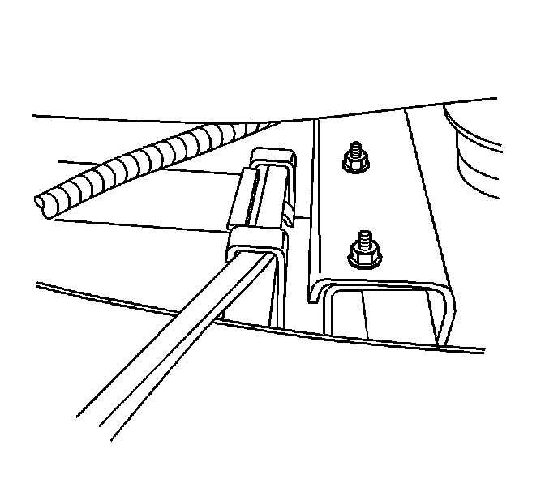

Evaporative Emission Canister Replacement (2500 Series)
EVAPORATIVE EMISSION CANISTER REPLACEMENT (2500 SERIES)
REMOVAL PROCEDURE
IMPORTANT: Clean all evaporative emission (EVAP) line connections and surrounding areas prior to disconnecting, in order to avoid possible EVAP system contamination.
1. Remove the right side, rear bumper step pad.
2. Raise and support the vehicle. Refer to Vehicle Lifting.
3. Disconnect the chassis wiring harness electrical connector (1) from the EVAP canister vent solenoid.

4. Disconnect the rear fuel tank EVAP canister quick connect fittings from the EVAP canister.
5. Remove the EVAP canister bolt.
6. Lower the vehicle half way.
7. Loosen the EVAP canister bracket nuts (1).

8. Using a flat bladed screwdriver, disengage the front bracket clip.
9. Using a flat bladed screwdriver, disengage the rear bracket clip.
10. Remove the EVAP canister.
11. Cap the EVAP lines in order to prevent possible EVAP system contamination.
12. Disconnect the EVAP canister vent solenoid line (1) quick connect fitting at the EVAP canister.
INSTALLATION PROCEDURE
1. Connect the EVAP canister vent solenoid line (1) quick connect fitting at the EVAP canister.
2. Remove the caps from the EVAP lines.
3. Install the EVAP canister.
4. Using a flat bladed screwdriver, engage the rear bracket clip.
5. Using a flat bladed screwdriver, engage the front bracket clip.
6. NOTE: Refer to Fastener Notice.
Tighten the EVAP canister bracket nuts (1).
Tighten the nuts to 25 N.m (18 lb ft).
7. Raise the vehicle.
8. Install the EVAP canister bolt.
Tighten the nuts to 25 N.m (18 lb ft).
9. Connect the rear fuel tank EVAP canister quick connect fittings to the EVAP canister.
10. Connect the EVAP canister vent solenoid (CVS) electrical connector (1).
11. Lower the vehicle.
12. Install the right side, rear bumper step pad.